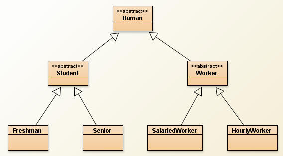

The following project involves extending simple classes and dealing with the inheritance hierarchy. This is the project that is closest to how the test will look.

Human:
Life as a human is much about the quest for happiness; and we define our happiness in different ways depending on the situation that we're in. Start by creating a class named Human:
- A human should have a single instance field for the name of the Human.
- The constructor for Human should take in one String and assign it to the
instance field
- Add the basic methods getName and setName, which do the usual
Deep down inside we all have an idea of whether or not we're happy. Add a method with the following header:
public abstract boolean isHappy();
Why abstract?
Human is a very general class. It only really knows the name of the Human. This is not enough to tell if this Human is happy or not (unless the name is Sacco). We are adding the method because it is one the every single Human should have. Making it abstract forces each Human to decide whether or not they're happy.
Compile the program, you'll see that the compiler is angry about the abstract method. This is because when you have an abstract method, the class itself must be declared abstract. Change the class header to public abstract class Human. It should now compile.
Student
Create a class named Student that is a subclass of Human.
- At the Student level there should be instance fields for the grade level of
the Student(int) and the GPA of the student(double).
- The constructor for Student should take in a name and a grade level for the
student. The GPA will remain 0.
- Add the methods getGPA, getGradeLevel, and setGradeLevel.
- Add a toString method that will return a String that includes the Student's name, their grade level, and if they're happy or unhappy. For example: "Steve: Grade 12: Happy"
Note: At this level we are not defining the isHappy method. That doesn't mean that we can't use it.
Compile the program. Once again the compiler is angry. We've inherited the abstract method isHapy and we haven't done anything about it. We are still not ready to define isHappy, so declare the Student class to be abstract.
Freshman
Create a class named Freshman, which is a subclass of Student.
- A Freshman is very simple. There are no new instance fields.
- Add a constructor that takes in just a String for the name.
- We want Freshman to be a complete class, so override the isHappy method.
A Freshman is so low on the totem pole that isHappy should always return false.
Senior
Create a class named Senior, which is a subclass of Student
- A Senior should have a boolean as an instance field to tell if they have
Senioritis or not (boolean)
- Add a constructor that takes in just a String for the name. The
senioritis field should default to false (sometimes it takes a few months)
- Add a setSenioritis method, which takes in a boolean and assigns it to the
senioritis field.
- We want Senior to be a complete class, so override the isHappy method. A
Senior with Senioritis is always happy (for now), while a Senior without
Senioritis is happy if their GPA is 3.5 or greater.
Test out your program so far with the following method:
public static void studentTester()
{
Freshman f1 = new Freshman("George");
Freshman f2 = new Freshman("Helen");
Senior s1 = new Senior("Isaac");
Senior s2 = new Senior("Jennifer");
s1.setSenioritis(true);
System.out.println(f1);
System.out.println(f2);
System.out.println(s1);
System.out.println(s2);
}
The output should look similar to the following (depending on your toString in Student):
George: Grade 9: Unhappy
Helen: Grade 9: Unhappy
Isaac: Grade 12: Happy
Jennifer: Grade 12: Unhappy
Worker
Create a class named Worker, which is a subclass of Human
- A Worker should have instance fields to represent the number of hours that
they've worked this week
- Worker's constructor should take in a String for the name of the Worker.
The number of hours should be set to 0.
- Add a getHoursWorked method, as well as a method named work,
which takes in a double and adds it to the number of hours that the Worker has
worked.
- Override the isHappy method. A Worker is happy if they've worked at most 40 hours.
Workers get paid differently according to their situation. Add a method with the following header:
public abstract double computePay();
Every Worker will have to override this method to determine how much they get paid this week. Declare Worker as an abstract class to appease the compiler.
Add a toString method that will include the Worker's name, the number of
hours they've worked, the pay that they've earned and if they're happy or not.
For example
"Steve has worked 40 hours this week and earned 950. He is happy.
Hint: Even though the computePay method is abstract/incomplete you may use it as if it isn't. This toString will be inherited by a class that has filled in the method.
SalariedWorker
Create a class named SalariedWorker, which is a subclass of Worker.
- A SalariedWorker should have a double as an instance field to represent
thier weekly salary.
- The Constructor for SalariedWorker should take in a String for the name and a
double for the weekly salary.
- Add a getWeeklySalary method
- Override the computePay method. For SalariedWorkers it's simple because
their pay is independent of time worked; computePay should just return the
weekly salary.
Test it out with the following method:
public static void salaryTester()
{
SalariedWorker sw1 = new SalariedWorker("David", 1000);
SalariedWorker sw2 = new SalariedWorker("Elizabeth", 1500);
SalariedWorker sw3 = new SalariedWorker("Frances", 700);
sw1.work(32);
sw2.work(40);
sw3.work(48);
System.out.println(sw1);
System.out.println(sw2);
System.out.println(sw3);
}
Your output should look similar to the following:
Worker David has worked 32.0 hours this week and earned 1000.0: Happy
Worker Elizabeth has worked 40.0 hours this week and earned 1500.0: Happy
Worker Frances has worked 48.0 hours this week and earned 700.0: Unhappy
HourlyWorker
Create a class named HourlyWorker, which is a subclass of Worker
- An HourlyWorker should have a double as an instance field to represent
their hourly wage
- The Constructor for HourlyWorker should take in a String for the name and a
double for the hourly wage.
- add a getHourlyWage method
- Override the computePay method according to the following rules:
-for the first 40 hours, the HourlyWorker earns their hourly wage
times the number of hours they've worked. For any time after that, they
earn 1.5 times their hourly wage.
Test it out with the following method:
public static void hourlyTester()
{
HourlyWorker hw1 = new HourlyWorker("Anna", 10.25);
HourlyWorker hw2 = new HourlyWorker("Brian", 15.00);
HourlyWorker hw3 = new HourlyWorker("Carol", 9.50);
hw1.work(32);
hw2.work(40);
hw3.work(48);
System.out.println(hw1);
System.out.println(hw2);
System.out.println(hw3);
}
The output should look similar to the following:
Worker Anna has worked 32.0 hours this week and earned 328.0: Happy
Worker Brian has worked 40.0 hours this week and earned 600.0: Happy
Worker Carol has worked 48.0 hours this week and earned 494.0: Unhappy